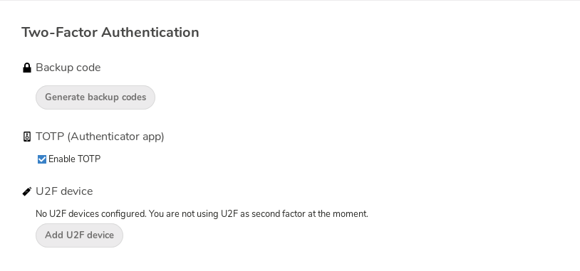
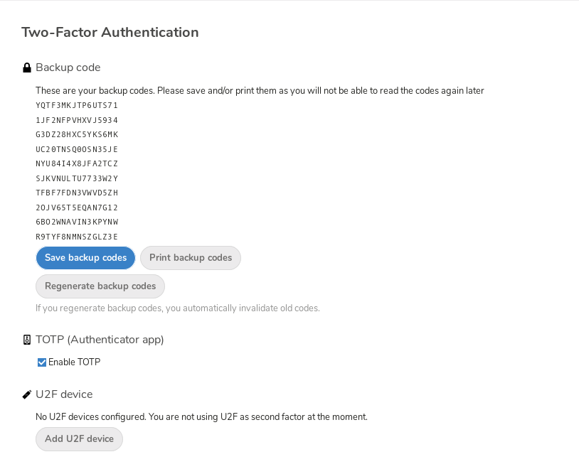
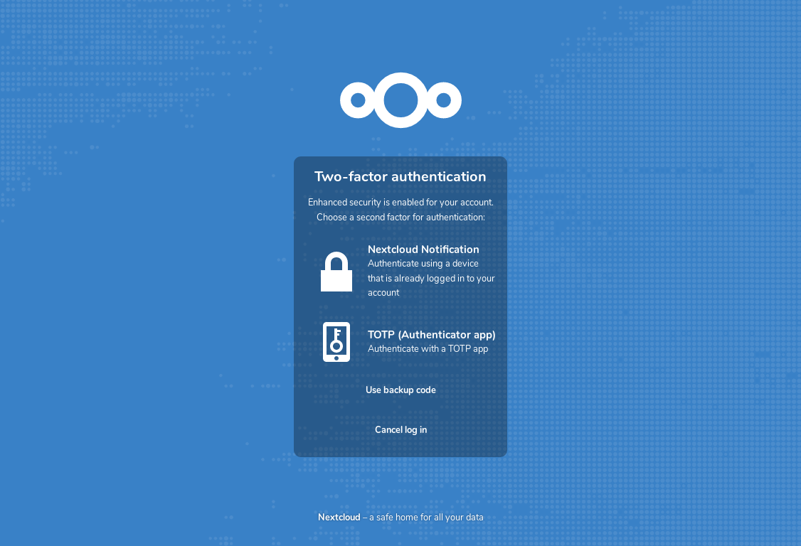
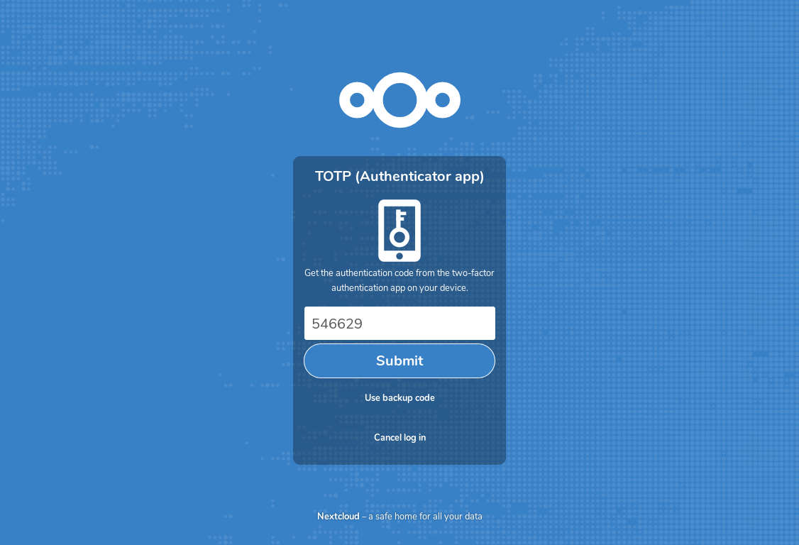

Ag baint úsáide as fíordheimhniú dhá-fhachtóir
Is bealach é fíordheimhniú dhá fhachtóir (2FA) chun do chuntas Nextcloud a chosaint ar rochtain neamhúdaraithe. Oibríonn sé trí dhá ‘chruthúnas’ éagsúla ar d’aitheantas a éileamh. Mar shampla, rud éigin atá ar eolas agat (cosúil le pasfhocal) agus rud éigin atá agat mar eochair fhisiciúil. De ghnáth, is é an chéad fhachtóir pasfhocal mar atá agat cheana féin agus is féidir leis an dara fachtóir a bheith ina teachtaireacht téacs a fhaigheann tú nó cód a ghineann tú ar do ghuthán nó gléas eile (rud atá agat). Tacaíonn Nextcloud le raon fachtóirí 2nd agus is féidir níos mó a chur leis.
Nuair a bheidh aip fíordheimhnithe dhá fhachtóir curtha ar chumas ag do riarthóir, is féidir leat í a chumasú agus a chumrú in Ag socrú do shainroghanna.
Fíordheimhniú dhá fhachtóir á chumrú
I do shocruithe pearsanta, aimsigh an socrú Fíordheimhniú an Dara Fachtóra. Sa sampla seo, is éard atá i gceist ná TOTP — cód bunaithe ar am atá comhoiriúnach le Google Authenticator:
Feicfidh tú do rún agus cód QR ar féidir leis an aip TOTP a scanadh ar do ghuthán (nó gléas eile). Ag brath ar an aip nó ar an uirlis, clóscríobh an cód nó scanadh an QR agus taispeánfaidh do ghléas cód logáil isteach a athraíonn gach 30 soicind.
Cóid aisghabhála má chailleann tú an dara fachtóir
Ba cheart duit cóid chúltaca a ghiniúint i gcónaí le haghaidh fíordheimhniú dhá fhachtóir (2FA). Má ghoidtear an gléas a úsáideann tú don dara fachtóir, nó má stopann sé ag obair, is féidir leat ceann de na cóid seo a úsáid chun rochtain a fháil ar do chuntas arís. Feidhmíonn sé, go bunúsach, mar dhara fachtóir cúltaca. Chun na cóid chúltaca a fháil, téigh chuig do shocruithe pearsanta agus féach faoi na socruithe Fíordheimhniú dhá fhachtóir. Roghnaigh Gin cóid chúltaca:

Feicfidh tú ansin liosta de chóid chúltaca nach féidir a úsáid ach uair amháin:

Coinnigh na cóid seo in áit shábháilte inar féidir leat teacht orthu. Ná coinnigh iad in éineacht leis an dara fachtóir (mar shampla, d’fhón póca), ach coinnigh ar leithligh iad, ionas nach gciallódh cailliúint an chinn amháin go gcaillfeá an ceann eile freisin.
Logáil isteach le fíordheimhniú dhá fhachtóir
Tar éis duit logáil amach agus logáil isteach arís, feicfidh tú leid i do bhrabhsálaí chun an cód TOTP a chur isteach. Má tá níos mó ná fachtóir amháin cumasaithe agat, feicfidh tú scáileán roghnaithe inar féidir leat a roghnú cén modh ba cheart a úsáid don logáil isteach seo. Roghnaigh TOTP:

Anois, níl le déanamh ach do chód a chur isteach:

Má bhí an cód ceart atreorófar thú chuig do chuntas Nextcloud.
Note
Ós rud é go bhfuil an cód bunaithe ar am, tá sé tábhachtach go mbeadh clog do fhreastalaí agus clog d’fhón cliste beagnach sioncronaithe le chéile. Ní bheidh fadhb ann má bhíonn difríocht cúpla soicind idir na cloig.
Fíordheimhniú dhá fhachtóir a úsáid le comharthaí crua-earraí
Is féidir leat fíordheimhniú dhá fhachtóir a úsáid bunaithe ar chomharthaí crua-earraí. Is eol go n-oibríonn na gléasanna seo a leanas:
Bunaithe ar TOTP:
Bunaithe ar FIDO2:
Feidhmchláir chliaint a úsáid le fíordheimhniú dhá fhachtóir
Nuair a bheidh fíordheimhniú dhá fhachtóir (2FA) cumasaithe agat, ní bheidh do chliaint in ann ceangal a dhéanamh trí úsáid a bhaint as do phasfhocal amháin, mura bhfuil tacaíocht acu freisin d’fhíordheimhniú dhá fhachtóir. Chun an cheist seo a réiteach, ba cheart duit pasfhocail ar leith do ghléasanna a ghiniúint dóibh. Féach Bainistigh brabhsálaithe agus gléasanna nasctha chun tuilleadh eolais a fháil faoin gcaoi le déanamh amhlaidh.
Breithnithe
Má úsáideann tú WebAuthn chun logáil isteach i do Nextcloud, bí cinnte gan an comhartha céanna a úsáid le haghaidh 2FA; bheadh sé i gceist leis sin nach bhfuil tú ag baint úsáide as ach fachtóir amháin arís.